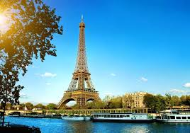
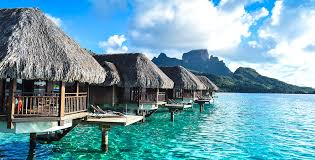

Paris
Paris is a magnificent city, famous the world over. The ultimate romantic city, it attracts tourists throughout the year, yet the capital of France has so much to offer that you need more than just a few hours to visit it. With its monuments, museums, shops, parks and restaurants, there really is something to please everyone, but whatever your taste, you will love this city of a thousand faces.
read more!Tahiti
As well as offering its own distinct personality and breathtaking backdrop, each island is home to an intricate natural tapestry and vibrant underwater world teeming with marine life and rhythmical reefs that rise and fall to a natural, island beat. Tahiti’s charm lies not only her in unrivalled beauty, but also in her versatility. Visitors can swim in a turquoise wonderland, whale watch in pristine waters, quad-bike along forested ridge lines, cruise on luxury yachts, indulge in a spa experience, savour wine from a tropical vineyard, shop for a Tahitian pearl, surf one of the world’s best-known breaks or simply relax and do absolutely nothing.
read more!Rome
The challenge when visiting Rome is deciding what not to do: there are so many churches, archaeological sites, piazzas and paintings to see that a lifetime is hardly enough. Don’t try to cram too much in; Rome moves at a slower pace than many northern Italian cities, and to enjoy it you should take time out in pavement cafés as well as shuffle round the Sistine Chapel.
London
London has a diverse range of people and cultures, and more than 300 languages are spoken in the region.[51] Its estimated mid-2016 municipal population (corresponding to Greater London) was 8,787,892,[52] the most populous of any city in the European Union[53] and accounting for 13.4% of the UK population.[54] London's urban area is the second most populous in the EU, after Paris, with 9,787,426 inhabitants at the 2011 census.[55] The population within the London commuter belt is the most populous in the EU with 14,040,163 inhabitants in 2016.[note 4][3][56] London was the world's most populous city from c. 1831 to 1925.
Dubai
Dubai, the glamorous and the richest city in the United Arab Emirates is not only one of the top travel destinations in Asia but also one of the most popular international travel destinations in the world. It is certainly not a place for backpackers or people with tight budget, but Dubai has so much to offer that an avid traveler like you or me will not mind spending extra here. There are so many reasons to visit Dubai and I have listed below 15 best reasons that will force you to travel to Dubai.
Barcelona
Barcelona is an enchanting seaside city with boundless culture, fabled architecture and a world-class drinking and dining scene.
read more!Maui
Within the Hawaiian-island family, Maui is the celebrity sibling: radiantly beautiful, a bit rebellious, and with glamour to spare. The island has attracted “seekers” for its healing energy since the 1960’s and, more recently, Internet millionaires and Hollywood A-listers who want to rejuvenate in five star spas.
read more!